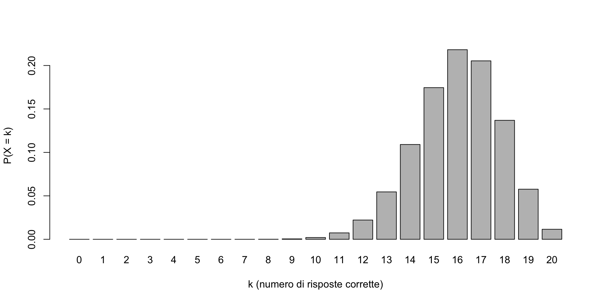
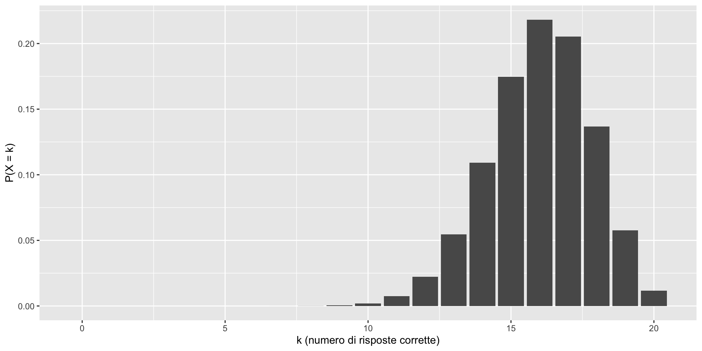
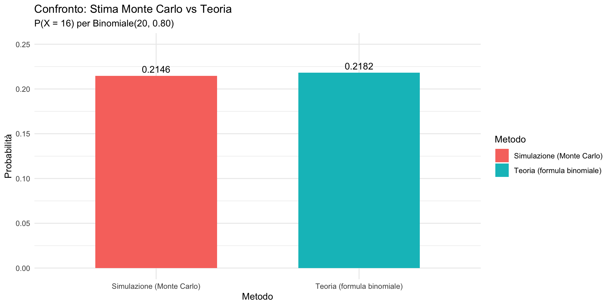
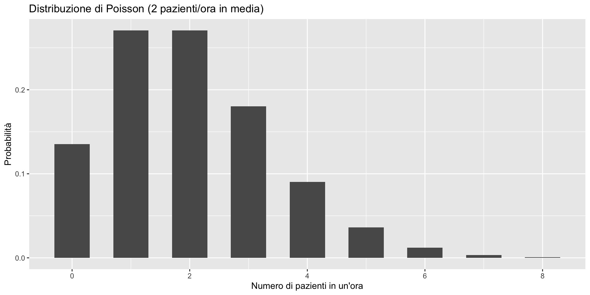
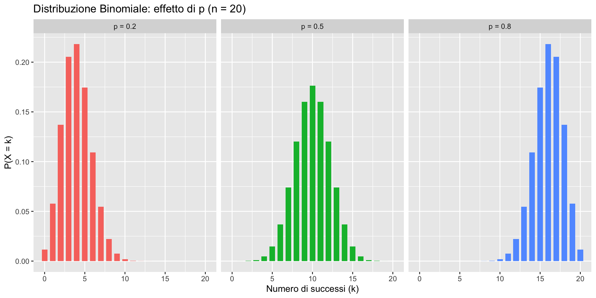
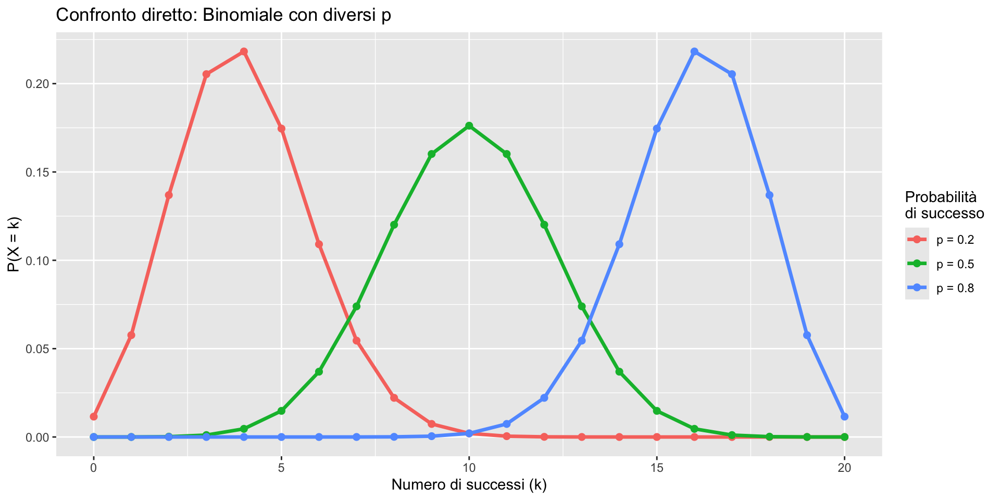
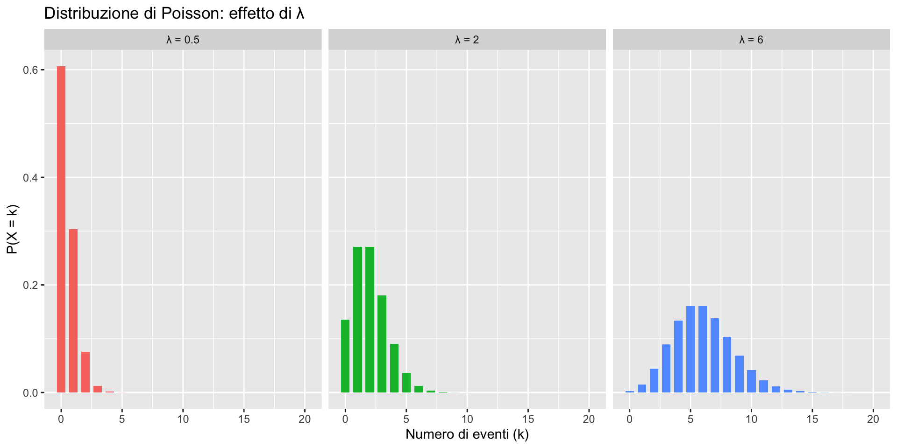
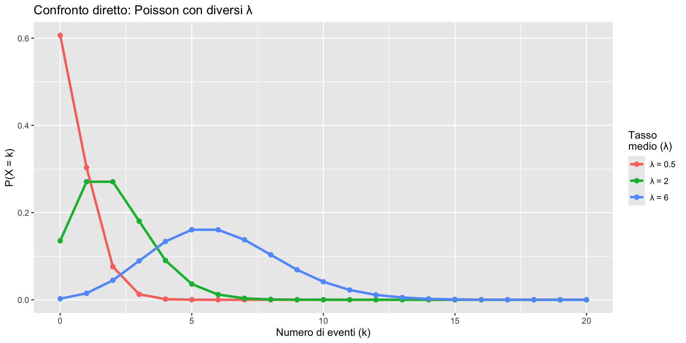
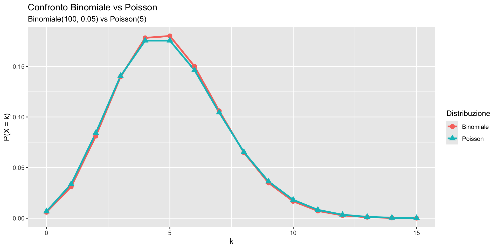

Distribuzioni discrete: Bernoulli, Binomiale, Poisson
Esercitazione pratica – Segmento 2 (esercizi con R)
![]()
29 ottobre 2026
Obiettivi del segmento
In questo secondo segmento usiamo R come “calcolatrice probabilistica” e come laboratorio per esplorare le distribuzioni.
Faremo due cose:
- calcolare probabilità esatte con le funzioni di R;
- verificare e capire le formule con simulazioni (Monte Carlo).
Regola di oggi:
ogni riga di codice deve corrispondere a un’idea probabilistica chiara.
Perché R è indispensabile per uno psicologo
Nel segmento precedente abbiamo visto che calcolare a mano \(P(X \geq 16)\) per una binomiale richiede cinque calcoli separati. In un contesto reale — dove i test hanno 50, 100 o più item — il calcolo a mano è impraticabile.
R vi permette di passare dalla domanda alla risposta in una riga di codice. Ma soprattutto, le simulazioni vi danno un modo concreto per verificare che la teoria funziona — e per sviluppare un’intuizione su come si comportano le distribuzioni.
Setup (da eseguire una volta)
set.seed()serve a ottenere gli stessi numeri casuali se rieseguiamo il codice.
Nsimè il numero di “esperimenti” simulati.
Ripasso rapidissimo: tre famiglie di funzioni in R
Per molte distribuzioni, R usa una convenzione molto semplice:
d...= massa di probabilità (probabilità puntuale)
p...= cumulativa (probabilità fino a un valore)
r...= random (generazione di dati casuali)
Esempi:
- binomiale:
dbinom(),pbinom(),rbinom() - Poisson:
dpois(),ppois(),rpois()
Esercizio 1 — Screening e probabilità di un singolo esito
Problema
Somministrate un test di screening per la difficoltà di lettura a un singolo bambino. In base ai dati normativi, la probabilità di risultare positivo nella popolazione scolastica è p = 0.15.
Calcoliamo con R:
- \(P(X=1)\) (test positivo)
- \(P(X=0)\) (test negativo)
Soluzione
dbinom(x, size, prob)restituisce \(P(X=x)\) per \(X \sim \text{Binomiale}(\text{size}, \text{prob})\).- se
size = 1, stiamo considerando una distribuzione di Bernoulli.
Controllo concettuale:
Esercizio 2 — Simulazione Bernoulli e frequenze
Problema
Simuliamo Nsim screening Bernoulli e stimiamo la frequenza di risultati positivi.
Poi la confrontiamo con p = 0.15.
Soluzione guidata
rbinom(..., size=1)genera molte prove di Bernoulli (0/1).- La media di una variabile 0/1 è la proporzione di 1 (successi).
Quindimean(X)stima \(P(X=1)\).
Interpretazione: su 2e+05 bambini (simulati) sottoposti a screening, la proporzione di positivi è molto vicina al 15% teorico.
In un vero programma di screening scolastico con migliaia di bambini, questo è esattamente il tipo di informazione che serve per stimare quante valutazioni di approfondimento saranno necessarie.
Esercizio 3 — Punteggio esatto in un test neuropsicologico
Problema
Un paziente risponde a 20 item indipendenti di una batteria neuropsicologica. Per un soggetto con capacità nella norma, la probabilità di risposta corretta per ciascun item è \(p = 0.80\).
Calcolare:
- \(P(X=16)\)
Soluzione guidata
dbinom(16, 20, 0.8)calcola direttamente la probabilità che il numero di successi sia esattamente 16.
Il valore ottenuto corrisponde a quello che abbiamo trovato in precedenza svolgendo i calcoli “a mano”.
Esercizio 4 — Prestazione “nella norma”
Problema
Calcolare:
- \(P(X \ge 16)\) con \(X \sim \text{Binomiale}(20, 0.8)\).
Questa è una domanda che ha un significato clinico diretto: “Qual è la probabilità che un soggetto nella norma ottenga almeno 16/20?”
Soluzione
pbinom(q, ...) restituisce \(P(X <= q)\):
Quindi \(P(X >= 16) = 1 - P(X <= 15)\):
- Questa è un’applicazione del complemento nello spazio giusto:
\(P(X \ge 16) = 1 - P(X \le 15)\).
pbinom()evita di sommare a mano tante probabilità puntuali.
Verifichiamo sommando le probabilità puntuali:
L’operazione di sommare le probabilità per più valori consecutivi di \(k\) può essere scritta in modo compatto usando la funzione sum() in R.
Invece di calcolare separatamente
\[P(X = 16) + P(X = 17) + \dots + P(X = 20)\]
possiamo passare alla funzione dbinom() un vettore di valori per l’argomento x e sommare i risultati in un unico comando:
Spiegazione:
16:20crea il vettorec(16, 17, 18, 19, 20).
dbinom()calcola la densità binomiale per ciascuno di questi valori e restituisce un vettore di probabilità.
sum()infine somma tutti gli elementi del vettore, restituendo la probabilità totale \(P(X \geq 16)\).
Significato clinico: circa il 63% dei soggetti con capacità nella norma otterrà almeno 16/20. Se un paziente ottiene 12/20, possiamo chiederci: “Quanto è probabile questo punteggio per un soggetto nella norma?” — ed è esattamente il tipo di ragionamento che fonda i cut-off diagnostici.
Esercizio 5 — Visualizzare la distribuzione binomiale
Problema
Costruire la distribuzione completa di \(X \sim \text{Binomiale}(20, 0.8)\) che include:
- i valori possibili: 0, 1, …, 20;
- le rispettive probabilità: \(P(X=k)\).
Soluzione
dbinom()prende come argomento anche un vettore: restituisce un vettore di probabilità;- la tabella ci permette di “vedere” la distribuzione come un oggetto.
Per visualizzare la distribuzione binomiale, creiamo un data frame:
k P
1 0 1.048576e-14
2 1 8.388608e-13
3 2 3.187671e-11
4 3 7.650410e-10
5 4 1.300570e-08
6 5 1.664729e-07
7 6 1.664729e-06
8 7 1.331783e-05
9 8 8.656592e-05
10 9 4.616849e-04
11 10 2.031414e-03
12 11 7.386959e-03
13 12 2.216088e-02
14 13 5.454985e-02
15 14 1.090997e-01
16 15 1.745595e-01
17 16 2.181994e-01
18 17 2.053641e-01
19 18 1.369094e-01
20 19 5.764608e-02
21 20 1.152922e-02Controllo: la somma deve essere 1.
Grafico a barre:

Usiamo ggplot2:

Osservate: la distribuzione è concentrata intorno a \(n \times p = 20 \times 0.80 = 16\). Questo è il punteggio “atteso” per un soggetto nella norma.
Esercizio 6 — Simulazione Monte Carlo di una Binomiale
Obiettivo:
verificare empiricamente la distribuzione binomiale attraverso simulazione, confrontando i risultati sperimentali con la teoria.
1. Contesto del problema
Vogliamo studiare il comportamento di una variabile binomiale:
\[ X \sim \text{Binomial}(n = 20, p = 0.80). \]
Approccio pratico: invece di calcolare solo le probabilità teoriche, simuliamo migliaia di volte l’esperimento e osserviamo la distribuzione dei risultati.
Perché simulare?
La simulazione ci permette di:
- visualizzare concretamente la variabile aleatoria;
- verificare le proprietà teoriche;
- comprendere il concetto di “distribuzione” in modo empirico.
2. Schema della simulazione
[Esperimento Base]
20 prove Bernoulli indipendenti (p = 0.80)
↓
Contare i successi → Un valore di X
↓
[Ripetere Nsim volte]
↓
Distribuzione empirica di X3. Implementazione in R
Generazione dei dati simulati
La funzione rbinom() genera direttamente il numero di successi:
[1] 17 15 17 18 14 16 18 14 12 17Ogni numero rappresenta il conteggio di successi in un singolo esperimento completo di 20 prove.
4. Analisi empirica: frequenza di un esito specifico
Domanda: qual è la frequenza relativa con cui otteniamo esattamente 16 successi?
Passo 1: Identificare i casi favorevoli
[1] FALSE FALSE FALSE FALSE FALSE TRUE FALSE FALSE FALSE FALSE
TRUEindica una simulazione dove \(X = 16\).
Passo 2: Calcolare la frequenza relativa
Interpretazione:
nelle 10.000 simulazioni, circa il 22% ha prodotto esattamente 16 successi.
Nota:
mean()su un vettore logico calcola direttamente la proporzione diTRUE, poiché R converteTRUE = 1eFALSE = 0.
5. Confronto critico: simulazione vs teoria
Metodo Probabilità
1 Simulazione (Monte Carlo) 0.2146000
2 Teoria (formula binomiale) 0.2181994Visualizzazione del confronto

6. Interpretazione dei risultati
Perché i valori sono simili ma non identici?
Legge dei Grandi Numeri:
Con \(N_{\text{sim}} = 10,000\), la stima empirica converge al valore teorico, ma non è ancora esatta.Errore di simulazione (variabilità campionaria):
\[ \text{SE} \approx \sqrt{\frac{p(1-p)}{N_{\text{sim}}}} \approx 0.004. \] L’intervallo \(0.2174 \pm 0.008\) contiene il valore teorico \(0.2182\).
Aumentando \(N_{\text{sim}}\):
7. Riepilogo concettuale
| Concetto | Implementazione R | Significato |
|---|---|---|
| Simulazione binomiale | rbinom(Nsim, size, prob) |
Genera Nsim conteggi di successi |
| Condizione logica | X_sim == 16 |
Identifica i casi con esattamente 16 successi |
| Frequenza relativa | mean(condizione) |
Stima Monte Carlo di \(P(X = 16)\) |
| Valore teorico | dbinom(16, size, prob) |
Probabilità esatta dalla binomiale |
Take-home message:
la simulazione Monte Carlo ci permette di validare empiricamente i risultati teorici e di comprendere la variabilità intrinseca dei processi aleatori.
Esercizio 7 — Modello Poisson per gli arrivi in un servizio
Contesto del problema
Un servizio di consulenza psicologica riceve pazienti senza appuntamento. Il responsabile del servizio vi chiede di aiutarlo a pianificare il personale: quanti psicologi servono nelle diverse fasce orarie?
Il tasso medio di arrivo è \(\lambda = 2\) pazienti all’ora. Le ipotesi del modello Poisson sono:
- gli arrivi sono indipendenti tra loro;
- la probabilità di arrivo è costante nell’intervallo temporale;
- più di un arrivo non può verificarsi nello stesso istante.
Variabile di interesse:
\(X\) = numero di pazienti che arrivano in un’ora fissata
Dunque:
\[ X \sim \text{Poisson}(\lambda = 2). \]
Obiettivi.
Calcolare tre probabilità utili per la gestione del servizio:
Probabilità di nessun arrivo: \(P(X = 0)\)
→ Quante ore “vuote” aspettarsi? Si può usare quel tempo per altre attività?Probabilità di esattamente 3 arrivi: \(P(X = 3)\)
→ Un solo psicologo può gestire 3 pazienti all’ora?Probabilità di al più 1 arrivo: \(P(X \leq 1)\)
→ Quanto spesso il carico è basso abbastanza per un solo operatore?
Soluzione in R
Impostazione del parametro
- Probabilità di nessun arrivo \(P(X = 0)\):
Interpretazione: c’è circa il 13.5% di probabilità che in un’ora non arrivi alcun paziente. Su un turno di 8 ore, ci si aspetta circa un’ora vuota — tempo che può essere dedicato alla documentazione clinica.
- Probabilità di esattamente 3 arrivi \(P(X = 3)\)
Interpretazione: c’è circa il 18.0% di probabilità che in un’ora arrivino esattamente 3 pazienti. Se un singolo psicologo può gestire al massimo 2 pazienti all’ora, serve prevedere un supporto aggiuntivo.
- Probabilità di al più 1 arrivo \(P(X \leq 1)\):
Interpretazione: c’è circa il 40.6% di probabilità che in un’ora arrivino 0 oppure 1 pazienti. Per circa il 40% del tempo, un solo psicologo sarebbe sufficiente.
Visualizzazione della distribuzione di Poisson
Passo 1: preparare i dati per il grafico.
# 1. Creiamo una sequenza di valori possibili per k (numero di pazienti)
k_valori <- 0:8 # Da 0 a 8 pazienti
# 2. Calcoliamo le probabilità per ciascun valore di k
probabilita <- dpois(k_valori, lambda = 2)
# 3. Mettiamo i dati in una tabella (data frame)
tabella <- data.frame(
pazienti = k_valori, # Prima colonna: numero di pazienti
prob = probabilita # Seconda colonna: probabilità
)Visualizziamo la tabella per vedere i valori:
Spiegazione:
0:8crea i numeri 0, 1, 2, …, 8.dpois()calcola la probabilità per ogni numero di pazienti.data.frame()organizza i dati in una tabella ordinata.
Passo 2: creare il grafico a barre.

Domanda per il responsabile del servizio
Con questo grafico possiamo rispondere a una domanda operativa concreta:
“Quale organico serve per coprire almeno il 95% delle ore senza sovraccarico?”
[1] 0.1353353 0.4060058 0.6766764 0.8571235 0.9473470 0.9834364 0.9954662Con 4 slot/ora (cioè capacità di accogliere fino a 4 pazienti), copriamo il ~95% delle ore. Questa è una decisione organizzativa fondata sui dati.
Domanda operativa chiave
Il responsabile del servizio non chiede una probabilità astratta, ma qualcosa del tipo:
“Quanti pazienti all’ora devo essere in grado di gestire per non andare in crisi quasi mai?”
Formalizziamo “quasi mai” come:
- almeno il 95% delle ore senza sovraccarico.
Traduzione statistica della domanda
Dire “non andare in sovraccarico” significa:
il numero di pazienti che arrivano in un’ora non supera la capacità del servizio.
Se la capacità è \(k\) pazienti/ora, questo evento è: \[ X \le k. \]
Quindi la domanda diventa:
per quale valore di \(k\) vale \[P(X \le k) \ge 0.95\ ?\]
Uso della Poisson cumulativa
Calcoliamo la probabilità cumulativa per diversi valori di \(k\):
Questo comando restituisce:
- \(P(X \le 0)\)
- \(P(X \le 1)\)
- …
- \(P(X \le 6)\)
cioè: quanta parte delle ore è coperta se posso gestire fino a \(k\) pazienti.
Interpretazione dei risultati
Leggendo i valori cumulativi (approssimativamente):
| Capacità (k pazienti/ora) | \(P(X \le k)\) | Significato operativo |
|---|---|---|
| 2 | ~0.68 | sovraccarico nel 32% delle ore |
| 3 | ~0.86 | sovraccarico nel 14% delle ore |
| 4 | ~0.95 | sovraccarico solo nel 5% delle ore |
| 5 | ~0.98 | margine molto ampio |
Conclusione gestionale
👉 Con una capacità di 4 pazienti all’ora, il servizio riesce a gestire circa il 95% delle ore senza sovraccarico.
Questo non significa che:
- non arriveranno mai più di 4 pazienti,
- oppure che il modello sia “vero”.
Significa che:
stiamo prendendo una decisione organizzativa consapevole, basata su un livello di rischio esplicito.
Messaggio chiave della slide
- La Poisson non serve solo a fare calcoli.
- Serve a trasformare l’incertezza in decisioni operative, con un rischio quantificato.
- Qui la distribuzione di Poisson diventa uno strumento di pianificazione reale, non solo teoria.
Sintesi delle funzioni R utilizzate
| Funzione | Uso | Formula matematica | Esempio |
|---|---|---|---|
dpois(x, lambda) |
Densità: \(P(X = k)\) | \(\frac{\lambda^k e^{-\lambda}}{k!}\) | dpois(3, 2) → \(P(X = 3)\) |
ppois(q, lambda) |
Distribuzione cumulativa: \(P(X \leq q)\) | \(\sum_{k=0}^q \frac{\lambda^k e^{-\lambda}}{k!}\) | ppois(1, 2) → \(P(X \leq 1)\) |
Riepilogo concettuale
| Concetto | Formula | Calcolo R | Risultato |
|---|---|---|---|
| Evento raro | \(P(X = 0)\) | dpois(0, 2) |
0.1353 |
| Evento moderato | \(P(X = 3)\) | dpois(3, 2) |
0.1804 |
| Evento cumulativo | \(P(X \leq 1)\) | ppois(1, 2) |
0.4060 |
Esercizio 8 — Verifica Monte Carlo della distribuzione di Poisson
Obiettivo:
verificare empiricamente la distribuzione di Poisson attraverso una simulazione.
- Teoria: sappiamo che per \(\lambda = 2\):
- \(P(X = 0) = 0.1353\),
- \(P(X = 3) = 0.1804\).
Simulazione: generiamo migliaia di valori casuali e calcoliamo le frequenze osservate.
Confronto: le frequenze osservate dovrebbero avvicinarsi alle probabilità teoriche.
Procedura passo-passo
Passo 1: impostare i parametri
Spiegazione: simuleremo 10,000 volte il conteggio di pazienti in un’ora, con una media di 2 pazienti.
Passo 2: generare i dati simulati.
[1] 4 2 4 0 2 2 1 4 4 0 0 0 3 2 2 4 2 0 1 2Cosa significa? Ogni numero rappresenta quanti pazienti sono “arrivati” in un’ora simulata.
Passo 3: calcolare le frequenze osservate.
Frequenza osservata di 0 arrivi: 0.1378 Come funziona:
arrivi_simulati == 0crea una lista di TRUE/FALSE (TRUE dove ci sono 0 arrivi);mean()calcola la percentuale di TRUE (perché TRUE=1, FALSE=0).
Passo 4: confronto diretto con la teoria.
# Calcola le probabilità teoriche
teoria_0 <- dpois(0, lambda) # P(X = 0) teorica
teoria_3 <- dpois(3, lambda) # P(X = 3) teorica
# Crea una tabella di confronto
confronto <- data.frame(
Evento = c("0 arrivi", "3 arrivi"),
Simulazione = c(freq_0, freq_3),
Teoria = c(teoria_0, teoria_3),
Differenza = c(freq_0 - teoria_0, freq_3 - teoria_3)
)
# Mostra la tabella
print(confronto) Evento Simulazione Teoria Differenza
1 0 arrivi 0.1378 0.1353353 0.002464717
2 3 arrivi 0.1830 0.1804470 0.002552956Interpretazione: le frequenze osservate sono molto vicine ai valori teorici.
Se aumentiamo le simulazioni (Nsim = 100,000):
[1] 0.13472[1] 0.18262Nota: più simulazioni = risultati più precisi.
Cosa abbiamo imparato?
rpois(n, lambda)generanvalori casuali da una Poisson.mean(X == k)calcola la frequenza relativa dell’evento \(X = k\).- Le simulazioni Monte Carlo approssimano le probabilità teoriche.
- Più simulazioni = migliore approssimazione (legge dei grandi numeri).
- Possiamo verificare formule matematiche attraverso esperimenti simulati.
Esercizio 9 — Esplorare come cambiano le distribuzioni
Obiettivo:
visualizzare come cambiano la distribuzione Binomiale e Poisson al variare dei loro parametri.
Parte 1: Distribuzione Binomiale - Effetto di p
Parametri fissi:
- Numero di prove: \(n = 20\) (fisso)
- Variamo la probabilità di successo: \(p = 0.2, 0.5, 0.8\)
Codice per generare i dati:
# Parametri
n <- 20
k_vals <- 0:n # Valori possibili per k (da 0 a 20)
# Calcola le probabilità per tre diversi valori di p
pk_p02 <- dbinom(k_vals, size = n, prob = 0.2) # p basso
pk_p05 <- dbinom(k_vals, size = n, prob = 0.5) # p intermedio
pk_p08 <- dbinom(k_vals, size = n, prob = 0.8) # p alto
# Combina i dati in un'unica tabella
dati_binom <- data.frame(
k = rep(k_vals, 3),
prob = c(pk_p02, pk_p05, pk_p08),
p = factor(rep(c("p = 0.2", "p = 0.5", "p = 0.8"), each = length(k_vals)))
)Visualizza le prime righe:
Visualizzazione con ggplot2
dati_binom |>
ggplot(aes(x = k, y = prob, fill = p)) +
geom_col(width = 0.7) +
facet_wrap(~ p, ncol = 3) + # Tre grafici affiancati
labs(title = "Distribuzione Binomiale: effetto di p (n = 20)",
x = "Numero di successi (k)",
y = "P(X = k)") +
theme(legend.position = "none") # Rimuove la legenda (ridondante)
Cosa osservare:
- p = 0.2: la distribuzione è spostata a sinistra (pochi successi);
- p = 0.5: distribuzione simmetrica attorno a k = 10;
- p = 0.8: distribuzione spostata a destra (molti successi).
Regola pratica: il valore più probabile è \(n \times p\).
Significato per l’assessment: queste tre distribuzioni rappresentano tre scenari diversi per un test a 20 item.
- Se \(p = 0.2\), il test è molto difficile (la maggior parte dei soggetti risponde correttamente solo a 3-5 item).
- Se \(p = 0.8\), il test è facile (la maggior parte ottiene 15-18 corretti).
La scelta della difficoltà degli item determina la forma della distribuzione dei punteggi — e quindi la capacità del test di discriminare tra soggetti diversi.
Versione alternativa: sovrapporre le distribuzioni

Parte 2: Distribuzione Poisson - Effetto di λ
Codice per generare i dati
# Valori di k da visualizzare
k_vals <- 0:20
# Calcola le probabilità per tre diversi lambda
pk_l05 <- dpois(k_vals, lambda = 0.5) # Lambda piccolo
pk_l2 <- dpois(k_vals, lambda = 2) # Lambda intermedio
pk_l6 <- dpois(k_vals, lambda = 6) # Lambda grande
# Combina i dati
dati_pois <- data.frame(
k = rep(k_vals, 3),
prob = c(pk_l05, pk_l2, pk_l6),
lambda = factor(rep(c("λ = 0.5", "λ = 2", "λ = 6"), each = length(k_vals)))
)Visualizzazione:

Cosa osservare:
- λ = 0.5: Molta probabilità su 0 e 1 eventi.
- λ = 2: Distribuzione più bilanciata, picco attorno a k = 2.
- λ = 6: Distribuzione più “larga”, picco attorno a k = 6.
Regola pratica: il valore più probabile è λ.
Significato clinico: il valore di \(\lambda\) cambia completamente il profilo dell’evento.
- Un paziente con \(\lambda = 0.5\) crisi di panico a settimana ha un profilo molto diverso da uno con \(\lambda = 6\).
La Poisson ci permette di quantificare queste differenze e di monitorare i cambiamenti nel tempo durante il trattamento.
Versione alternativa: sovrapporre le distribuzioni

Parte 3: Confronto Binomiale vs Poisson
Quando \(n\) è grande e \(p\) è piccolo, la Binomiale ≈ Poisson con \(λ = np\)

Sintesi delle osservazioni
Per la Binomiale (n = 20):
| p | Forma | Valore più probabile |
|---|---|---|
| 0.2 | Asimmetrica a sinistra | ~4 |
| 0.5 | Simmetrica | ~10 |
| 0.8 | Asimmetrica a destra | ~16 |
Per la Poisson:
| λ | Forma | Valore più probabile |
|---|---|---|
| 0.5 | Molto concentrata su 0-1 | 0 |
| 2 | Modestamente dispersa | 1-2 |
| 6 | Ampia dispersione | 5-6 |
Esercizio 10 — La scala temporale nella Poisson
Nella distribuzione di Poisson, λ è un tasso medio, non un conteggio.
Se conosco il tasso per un’ora, posso calcolare il tasso per qualsiasi intervallo:
\[ \lambda_t = \lambda \times t, \]
dove \(t\) è la durata in ore.
Il contesto
Un servizio di consulenza psicologica riceve pazienti senza appuntamento.
Dato:
in media arrivano 2 pazienti all’ora.
Quindi: \(\lambda = 2\) (pazienti/ora).
Cosa significa λ = 2?
Attenzione: \(\lambda = 2\) non significa che arrivano sempre 2 pazienti.
Significa che:
- a volte ne arrivano 0, a volte 1, a volte 3, ecc.
- nel lungo periodo, la media è 2 all’ora.
Cambiamo l’intervallo di osservazione
Domande:
- in mezz’ora, qual è il numero medio atteso di pazienti?
- in due ore, qual è il numero medio atteso?
Calcolo del tasso per intervalli diversi
Usiamo la formula \(\lambda_t = \lambda \times t\):
I risultati
Interpretazione:
- in mezz’ora, ci aspettiamo in media 1 paziente;
- in due ore, ci aspettiamo in media 4 pazienti.
Cosa cambia e cosa resta uguale
Non cambia:
- il meccanismo di arrivo dei pazienti;
- il tasso base (2 pazienti/ora).
Cambia:
- la durata dell’osservazione;
- il valore atteso del numero di arrivi.
Una domanda intuitiva
È più probabile non vedere nessun paziente in 30 minuti o in 2 ore?
La probabilità di zero arrivi
Nella Poisson, \(P(X = 0) = e^{-\lambda}\).
Più alto è λ, più bassa è questa probabilità.
Interpretazione
| Intervallo | λ | P(nessun arrivo) |
|---|---|---|
| 30 minuti | 1 | 37% |
| 1 ora | 2 | 14% |
| 2 ore | 4 | 2% |
Più tempo osserviamo, più è improbabile che non arrivi nessuno.
Un’applicazione clinica
Lo stesso principio si applica al monitoraggio clinico:
- Se un paziente con disturbo di panico ha in media \(\lambda = 3\) crisi al mese, la probabilità di passare un’intera settimana senza crisi (\(\lambda_{\text{sett}} = 0.75\)) è \(e^{-0.75} \approx 47\%\).
- Dopo un mese di trattamento, se \(\lambda\) scende a 1 crisi/mese, la probabilità di una settimana senza crisi sale a \(e^{-0.25} \approx 78\%\).
La Poisson ci permette di quantificare il miglioramento clinico in termini di probabilità di periodi liberi da sintomi.
Riepilogo
- λ è un tasso, non un conteggio.
- Per cambiare intervallo: \(\lambda_t = \lambda \times t\).
- Intervalli più lunghi → più eventi attesi.
- Eventi rari in intervalli brevi diventano probabili in intervalli lunghi.
Formula chiave
\[ \boxed{\lambda_t = \lambda \times t} \]
Esempio:
- se λ = 2 pazienti/ora;
- in 3 ore: \(\lambda_3 = 2 \times 3 = 6\) pazienti attesi.
Riepilogo finale
Oggi abbiamo usato R per:
- calcolare probabilità esatte:
- binomiale:
dbinom(),pbinom() - Poisson:
dpois(),ppois()
- binomiale:
- simulare dati e collegare simulazione e teoria:
rbinom(),rpois()
- visualizzare la forma della distribuzione e capire l’effetto dei parametri.
Perché tutto questo conta per la nostra professione
Le distribuzioni discrete non sono astrazioni matematiche. Sono il linguaggio con cui si descrivono i dati che incontrerete ogni giorno:
- I punteggi ai test sono conteggi (binomiale).
- Le frequenze dei sintomi sono conteggi (Poisson).
- Le decisioni diagnostiche (positivo/negativo) sono esiti binari (Bernoulli).
Perché tutto questo conta per la nostra professione
R è lo strumento che ci permette di passare dalla teoria alla pratica: dal modello matematico alla risposta alla domanda clinica. Il calcolo a mano migliora la comprensione; R ci fornisce potenza operativa. Servono entrambi.
Le distribuzioni discrete sono strumenti per descrivere conteggi.
R ci permette di calcolare, controllare e capire questi strumenti in modo immediato.